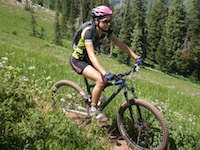
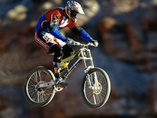

Mountain Riders News
The Trail Care Crew has officially left the building and looking
back on
the weekend I have to say it was a huge success. Steve and Morgan
arrived last Thursday and they're first stop was Mountain park where
Richard and Ben gave them the full tour of the trail system. more...
the weekend I have to say it was a huge success. Steve and Morgan
arrived last Thursday and they're first stop was Mountain park where
Richard and Ben gave them the full tour of the trail system. more...
Mountain Riders News
Thursday night MR held the monthly club meeting a little bit early
at one
of the best restaurants in town and a big supporter, Roadhouse. While
we all dined on the Roadhouse's awesome food and beverages, Steve
and Morgan presented us with a brief presentation. The topic of the
meeting was how to strengthen the club, fundraising ideas and some
pointers on how to promote member involvement. The meeting was
interesting and a nice change of pace from our usual subject. more...
of the best restaurants in town and a big supporter, Roadhouse. While
we all dined on the Roadhouse's awesome food and beverages, Steve
and Morgan presented us with a brief presentation. The topic of the
meeting was how to strengthen the club, fundraising ideas and some
pointers on how to promote member involvement. The meeting was
interesting and a nice change of pace from our usual subject. more...
Mountain Riders News
Friday we kicked things off at 9am with MRC's "Better Living
Through
Trails" presentation. The crew discussed the low cost of trail
construction and maintenance in comparison to the development and
maintenance of other recreational sports and activities. Steve and
Morgan boasted the abilities and efforts of the MRC and future projects
and partnerships are now being discussed as a result of the meeting.
more...
Trails" presentation. The crew discussed the low cost of trail
construction and maintenance in comparison to the development and
maintenance of other recreational sports and activities. Steve and
Morgan boasted the abilities and efforts of the MRC and future projects
and partnerships are now being discussed as a result of the meeting.
more...